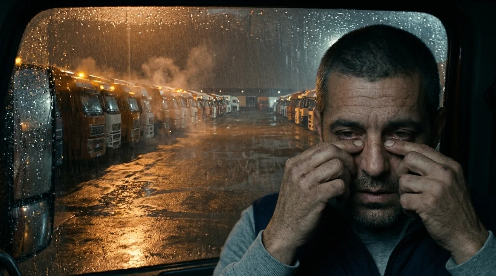
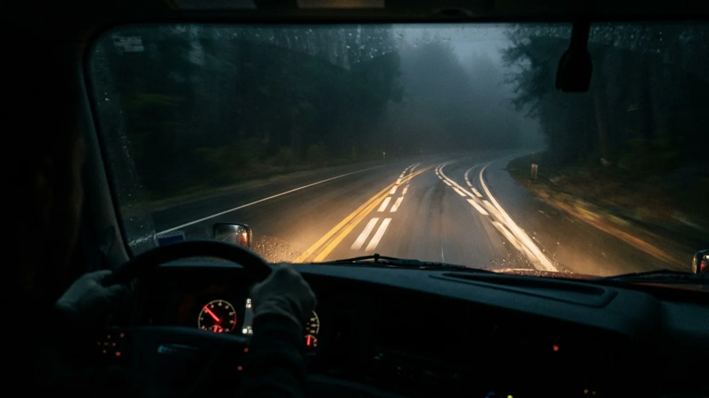
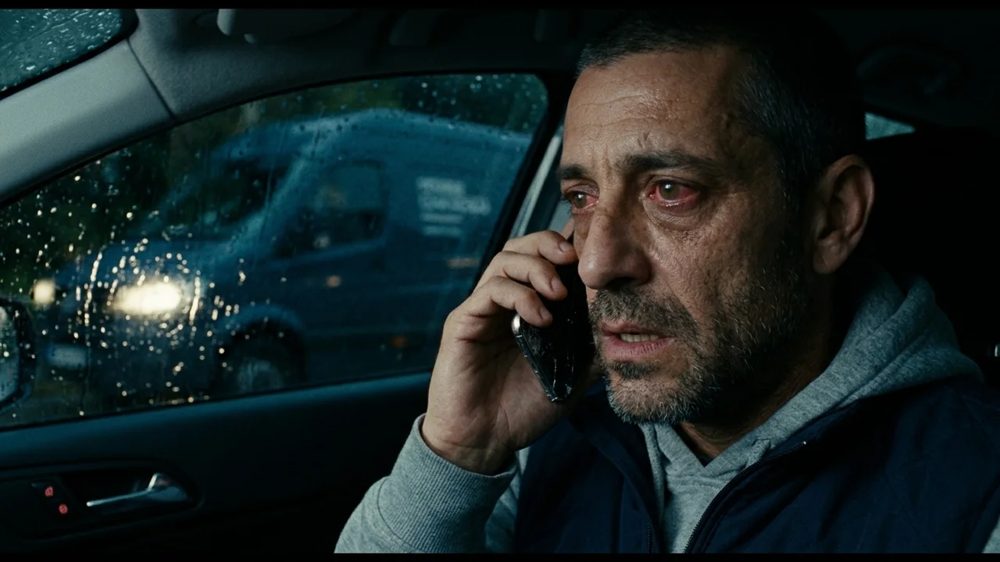
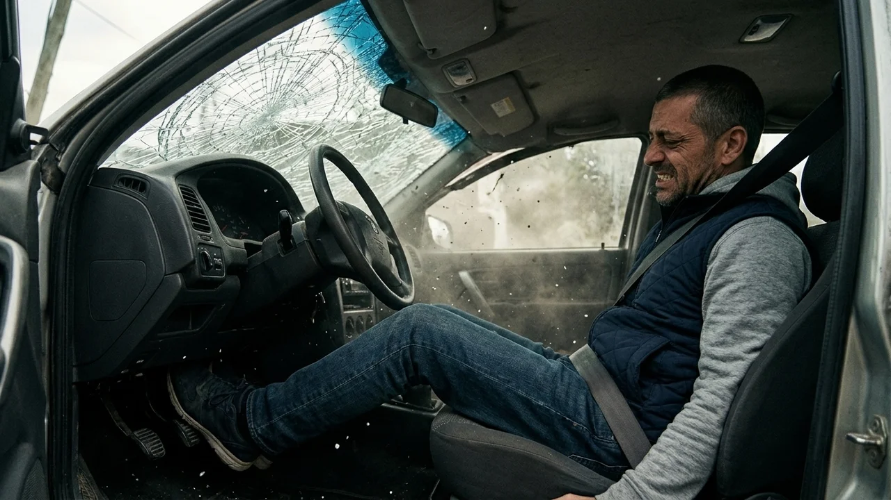
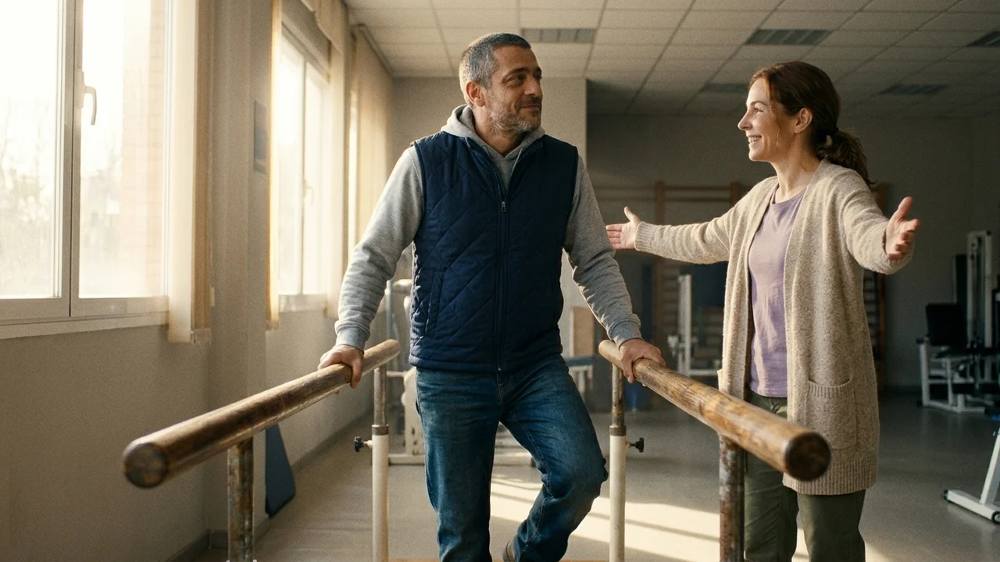

El tacógrafo digital emitió un pitido seco cuando Javier pulsó la tecla de extracción. La pantalla parpadeó marcando las tres y dieciocho de la madrugada. Fuera de la cabina, la lluvia de noviembre caía sobre el asfalto aceitoso de la plataforma logística de Pinto, donde los motores al ralentí de los camiones llenaban la noche de un ronroneo grave. Javier se frotó los ojos; le ardían como si tuviera arena bajo los párpados. Había completado su ruta habitual de trescientos kilómetros entre Albacete y Madrid, esquivando baches y charcos. Solo le quedaba sellar la hoja en la oficina e irse a dormir siete horas seguidas.
Empujó la puerta de la garita de tráfico buscando el calor del calefactor. Tomás Aguilar no levantó la vista del monitor; tenía tres teléfonos alineados junto al teclado y el auricular parpadeaba en su oreja.
—Justo a tiempo, Javier —dijo Tomás, pasándole una orden de carga sobre el mostrador—. Engancha el tres y bájame tres palés de mazo eléctrico a la planta de Torrijos.
Javier miró el papel. La casilla de entrega marcaba las cinco y media de la mañana.
—Tomás, he cerrado turno. Acabo de sacar la tarjeta. Si vuelvo a meterla me salta la infracción de descanso en el primer control.
El coordinador soltó el ratón y apoyó los codos en la mesa, mirándolo con fijeza.
—Vas por comarcales, Javier. A estas horas no hay patrullas en la cuarenta cero uno. Si esa línea se para a las seis, nos rescinden el contrato. Cuatrocientos mil euros al año. La dirección no va a tolerar que un camión se quede en la campa por cuarenta minutos de margen.
—Llevo desde las siete de la tarde al volante —insistió Javier—. Me estoy cayendo.
Tomás adoptó un tono confidencial y bajo.
—Eres el mejor chófer que tengo en la noche. Los chavales nuevos no saben meter ese camión en muelles estrechos sin rozar las esquinas. Si te lo pido a ti es porque sé que respondes. Te meto dos horas de nocturnidad doble y mañana entras más tarde. Sabes cómo está el patio en la empresa con las bajas y los contratos.
La palabra «contratos» quedó suspendida como una amenaza sutil. Javier pensó en la hipoteca y en sus dos hijas. Apretó la mandíbula y tragó saliva.
—Dame diez minutos para tomar un café —dijo al fin.
Tomás le tendió la llave con una sonrisa rápida.
—Te debo una, campeón. El cliente ya cuenta contigo.

A las cuatro y cinco de la mañana, el camión de doce toneladas rodaba por la carretera comarcal. La autovía había quedado atrás; ahora el trayecto discurría por dos carriles estrechos entre olivares que la niebla del Tajo borraba a partir de cincuenta metros.
El habitáculo era una cápsula cerrada. El motor rugía bajo el suelo con una vibración monótona que adormecía los sentidos. Javier sentía la nuca rígida y un peso sordo sobre las sienes.
«Son sesenta kilómetros de nada», se dijo en voz alta para romper el silencio.
Bajó la ventanilla un par de dedos. El aire helado le golpeó la mejilla izquierda con olor a jara mojada, arrancándole un escalofrío que le despejó la cabeza unos instantes. Subió el volumen de la radio buscando música rítmica. Apretó el volante con fuerza, destapó el termo con una sola mano y bebió un sorbo largo. El café estaba templado y amargo; su estómago lo recibió como un nudo ácido.
De pronto, la línea blanca discontinua del asfalto pareció curvarse. Javier parpadeó con fuerza. La línea no se curvaba: era su vista la que perdía el foco. Durante dos segundos enteros, la calzada se disolvió en una mancha grisácea y la cabeza se le descolgó hacia adelante.
Un chasquido metálico lo despertó de golpe. Los neumáticos derechos acababan de pisar la banda rugosa del arcén. Javier corrigió el rumbo con un tirón asustado, sintiendo el corazón desbocado contra las costillas.
La pantalla del manos libres se encendió en el salpicadero con el nombre de Laura. Javier pulsó la tecla del volante con dedos torpes.
—¿Javier? —su mujer sonaba adormilada—. He mirado el reloj y no estabas. ¿Ocurre algo?
Javier respiró hondo para disimular el temblor.
—Nada, cariño. Me ha salido una descarga urgente cerca de Toledo. Se retrasó la salida en la nave.
—Estás agotado, se te nota en la voz —dijo ella con preocupación—. Llevas tres noches durmiendo a saltos. No deberías haber cogido ese viaje.
—Son dos duros más, Laura. Ya estoy casi en el polígono. Descargo y tiro para casa. Vuelve a dormirte, que te levantas pronto con las niñas.
—Ten mucho cuidado, por favor. Llámame en cuanto pares.

—Descuida. Un beso.
Cortó la comunicación. La cabina volvió a quedar sumida en un silencio opresivo.
A las cuatro y cuarenta y cinco, la niebla se espesó en una bajada entre pinares. Las luces largas rebotaban en una pared blanca y Javier tuvo que poner las cortas y reducir a sesenta por hora.
El sueño ya no era cansancio: era una masa pegajosa que le anulaba los reflejos. Los párpados le pesaban una barbaridad. Los cerraba creyendo que descansaba una fracción de segundo, pero en cada parpadeo la negrura duraba un poco más.
En mitad de la pendiente, dos pilotos rojos aparecieron a menos de veinte metros.
Una furgoneta blanca de mensajería acababa de frenar en seco ante una rama caída en la calzada. El cerebro de Javier tardó un segundo de más en reaccionar. Cuando pisó el freno a fondo, la furgoneta ocupaba ya casi todo el parabrisas.
—¡Me cago en diez! —gritó, clavando el pie en el pedal y tirando del volante a la izquierda.
Los sistemas antibloqueo crujieron bajo el suelo con sacudidas violentas. La carga en la caja trasera golpeó los tabiques. El camión invadió por completo el carril contrario derrapando sobre el asfalto mojado y esquivó el parachoques de la furgoneta por centímetros. De haber venido alguien de frente, el choque habría sido mortal.
Javier enderezó el camión como pudo y lo metió en un apartadero de grava. Caló el motor al soltar el embrague con brusquedad.
Se desplomó sobre el volante, jadeando. Las manos le temblaban tanto que no acertaba a poner las luces de emergencia. El sudor frío le empapaba el cuello.
«Casi los mato», pensó, cerrando los ojos con furia. «Casi me mato yo».
Tomó el teléfono y marcó la garita de Pinto. Tomás contestó de inmediato.

—Dime que ya estás en Torrijos.
—Tomás, acabo de tener un susto tremendo —dijo Javier con voz rota—. Casi me llevo por delante una furgoneta. He invadido el carril contrario. No veo la carretera, Tomás. Me estoy quedando dormido al volante.
Se escuchó el tecleo de Tomás en el ordenador.
—¿Ha habido golpe? —preguntó.
—No, pero...
—¿El camión está bien? ¿La carga se ha movido?
—El camión está entero, pero yo no puedo seguir. Estoy parado en Añover. Me tiemblan las piernas. Voy a reclinar el asiento y dormir una hora.
La voz de Tomás se endureció al instante.
—Ni se te ocurra, Javier. Son las cinco y cinco. Estás a veinte minutos de la fábrica. Si te duermes ahora, la línea no arranca a las seis. La penalización es de treinta mil euros la hora y el seguro no cubre paradas voluntarias. ¿Te enteras?
—¡Que me voy a matar, Tomás! —gritó Javier—. ¡Que no coordino!
—Lávate la cara con agua fría en la cuneta, abre la ventanilla y haz los quince kilómetros que te quedan. Quince kilómetros. En veinte minutos estás dentro y te descargas tú mismo mientras descansas. Si me dejas tirado, mañana no hace falta que metas la tarjeta. Te lo digo muy en serio.
La llamada se cortó con un chasquido.
Javier dejó caer el brazo sobre el asiento. Miró por los espejos; la niebla cubría la carretera solitaria. Nadie iba a ayudarlo. A sus cuarenta y dos años y con las deudas encima, un despido disciplinario significaba quedarse fuera del sector.
Bajó de la cabina, se arrodilló junto a un charco del arcén y se arrojó agua helada a la cara con ambas manos. El frío le mordió la piel y le despejó momentáneamente las sienes. Subió de nuevo al camión, engranó primera y volvió a la calzada.

La recta que desembocaba en la variante de Torrijos discurría entre encinas viejas. El reloj marcaba las cinco y treinta y cuatro. Faltaban apenas cuatro kilómetros para la rotonda del polígono.
Javier creyó que lo había logrado. El aire cortante le entumecía la oreja y la tensión del altercado parecía sostenerlo despierto.
Pero el cuerpo no negocia con el agotamiento.
Ocurrió sin previo aviso. No hubo bostezo ni pesadez. La mente de Javier se apagó en un corte limpio de cuatro segundos. Los párpados se cerraron y sus músculos se aflojaron sobre el respaldo como bajo una anestesia súbita.
Cuando abrió los ojos, el camión marchaba a setenta y cinco por hora y las luces largas alumbraron, a diez metros escasos, el bulto oscuro de un jabalí cruzando el carril.
El reflejo primario pudo más que la prudencia: Javier dio un volantazo instintivo a la derecha.
Las doce toneladas sobre el suelo empapado desobedecieron la maniobra. Las ruedas delanteras deslizaron sin agarre y el morro subviró hacia el arcén, arrancando el quitamiedos con un chillido ensordecedor de chapa y tornillos. La inercia lanzó el vehículo por un talud de tres metros.
El camión volcó sobre el costado izquierdo en una caída lenta y pesada. El parabrisas reventó en miles de granos de cristal. El techo cedió contra los montantes, el volante se dobló contra el pecho de Javier y el salpicadero se hundió aprisionándole las dos piernas contra los pedales rotos.
Después vino el silencio.
Un silencio denso, acompañado por el silbido del anticongelante sobre el motor hirviendo y el goteo pausado del gasóleo en la tierra arada del olivar.
Javier quedó suspendido del cinturón, con la cara cortada por los cristales. Quiso mover los pies para zafarse, pero de cintura para abajo no sintió nada; solo un entumecimiento helado que avanzaba hacia el estómago.
Con un esfuerzo agónico, estiró los dedos hacia el salpicadero astillado. A corta distancia, la pantalla rota del tacógrafo seguía encendida en la penumbra.
El minutero digital cambió con calma indiferente: marcó las seis y dos minutos. La entrega más urgente del mundo acababa de perderse para siempre en el fondo de una zanja.

Cinco meses después, la luz clara de una mañana de primavera entraba por los ventanales de la sala de rehabilitación del hospital de Toledo.
El aire olía a alcohol y linimento. Javier se sujetaba con las dos manos a las barras paralelas, temblando por el esfuerzo de mantener el equilibrio. Llevaba férulas de plástico en ambas piernas para suplir la falta de fuerza en los tobillos tras la operación de columna. Cada paso era una batalla lenta contra la rigidez muscular.
A dos metros, Laura lo esperaba de pie con los brazos abiertos y una sonrisa donde se mezclaban el alivio y el cansancio de meses de guardia hospitalaria.
—Un paso más, Javier —le animó con suavidad—. Despacio. Apoya primero el talón.
Javier apretó los dientes, cargó el peso sobre las palmas y adelantó la pierna izquierda diez centímetros. Una gota de sudor le cayó por la mejilla.
En ese instante, el teléfono que descansaba sobre la bolsa de deporte empezó a vibrar. Laura se acercó a mirar la pantalla y frunció el ceño.
—Es de la nave —dijo, pasándoselo con desconfianza—. Tomás.
Javier se detuvo entre las barras. Respiró hondo, tomó el móvil con dedos temblorosos y activó el altavoz.
—¿Javier? Hombre, qué alegría oírte —la voz de Tomás sonaba apresurada, envuelta en el rumor habitual de carretillas y teléfonos—. Me dijeron que la intervención salió bien y que ya te tienen de pie. Me alegro de veras. Menudo susto nos diste a todos.
Javier no respondió. Miró sus zapatillas ortopédicas sobre el suelo de goma.
—Te llamo porque estamos cuadrando los turnos para la campaña de verano —prosiguió Tomás, bajando el tono con fingida cercanía—. Con la baja laboral la mutua te dará el alta pronto. Me vendría de perlas meterte en la ruta fija de noche. Los nuevos no aguantan y me dejan tirado a mitad de semana. Tú ya te sabes las mañas. ¿Cómo te ves para subirte otra vez a la cabina en junio?
Javier levantó la vista. Al otro lado del cristal, los árboles del patio verdeaban bajo el sol templado de las once de la mañana. Laura lo observaba en silencio, con los ojos húmedos y las manos quietas.
Javier no dijo una sola palabra.
Apartó la mano de la barra, pulsó el botón rojo en la pantalla cortando la llamada y dejó caer el teléfono sobre el banco. Después miró a su mujer, flexionó las rodillas con esfuerzo y dio otro paso hacia adelante.